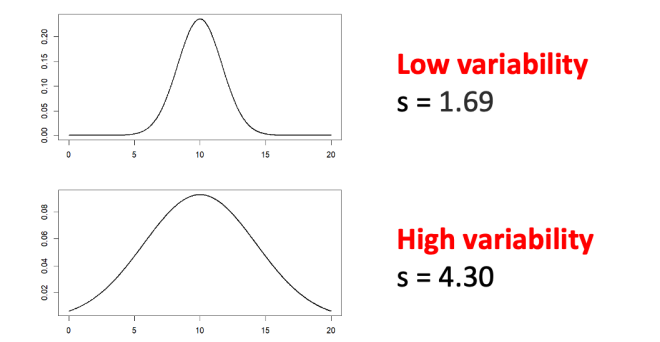
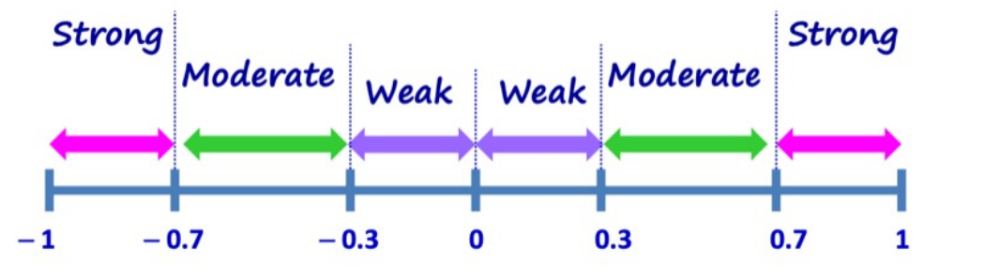

GEA1000N Lecture Notes
This for a SU mode? Lol
Chapter 1: Getting Data
\(Population\) \(Parameter\): A numerical fact about the population(e.g. standard deviation of the average height)
\(Sampling\) \(Frame\): list from which the \(sample\)(opposed to \(census\)) is selected
\(Bias\)
\(Selection\) \(Bias\): the researcher's biased selection of sample or non-probability sampling
\(Non-response\) \(Bias\): participant's non-disclosure/non-participation
\(Probability\) \(Sampling\): each unit in the sample has a known non-zero probability of being selected.
\(Simple\) \(Random\) \(Sampling\): each set of n-units has the same chance of being selected. Here we use \(sampling\) \(without\) \(replacement\).
\(Systematic\) \(Sampling\): applying a selection interval k and a random starting point from the first interval
\(Stratified\) \(Sampling\): sampling frame is divided into groups called strata. Each stratum is similar in that they share similar characteristics but the size of each stratum does not necessarily have to be the same.
\(Cluster\) \(Sampling\):A fixed number of clusters are then selected using simple random sampling. All the units from the selected clusters are then included in the overall sample.
\(Non-probability\) \(Sampling\): Convenience sampling / volunteer sampling
\(Variables\)
\(Categoriacal\):
\(Ordinal\): Natural ordering and numbers can be used to represent the ordering. E.g. Rating
\(Nominal\)
\(Numerical\)
\(Discrete\)
\(Continuous\)
\(Summary Statistics\)
\(Variance\) and \(Standard-Deviation\) ([U] Why is it not n)
\[Var = \frac{(x_1 − \bar{x})^2 + (x_2 − \bar{x})^2 + · · · + (x_n − \bar{x})^2}{n−1}\]
\[S_x = \sqrt{Var}\]
\[\text{coefficient of variation} = \frac{s_x}{\bar{x}}\]
Adding a constant C to each data does not change variance, however, multiplying C to the data would make \(S_x'\)
\[S_x' = |C| S_x\]
\(Median\) and \(IQRs\)
If you divide the sample into different groups, the overall median would always be between the lowest and highest median of all groups. However, we cannot derive median in this case.
Calculating \(Q_1\) and \(Q_3\): divide the group into two halfs using the mdian, than calculate median for the lower half and upper half
\(\text{Inter Quatile Range}\): \[IQR = Q_3 - Q_1\]
\(Mode\): the data that appeared most.
Studies
\(\text{Experimental Study}\):
\(placebo\): inactive substance or other intervention given to the control group that looks the same as active drug or treatment being tested. \(Placebo\) \(effect\): refers to when the control group still show some positive effect because of the psychology of believing.
\(Blinding\):
\(\text{Observational Study}\)
Observational Studies cannot provide evidence for cause-and-effect. However, if the experiment has randomised assignment and blinding, it can.
Chapter 2: Categorical Data Analysis
\(rates\)
\(marginal\) \(rates\): the rates that are relevant to only 1 categorical value(the rates that uses only the margined values in the \(\text{2x2 contingency table}\))
\(conditional\) \(rates\): rate of X given Y
\(joint\) \(rates\): rate of (X and Y)
Association
\[rate(A | B) > rate(A | NB)\]Then, \[\text{there is an positive association between A and B}\]
\[rate(A | B) < rate(A | NB) ⇔ rate(B | A) < rate(B | NA\tag{Symmetric Rule}\]
\[\text{rate(A) is between rate(A | B) and rate(A | NB)}\tag{Basic Rule}\], Plus, \[\text{the larger rate(B) is, the closer rate(A) is to rate(A|B)}\].
\(Simpson’s\) \(Paradox\) is a phenomenon in which a trend appears in more than half of the groups of data but disappears or reverses when the groups are combined. This appears because there is a \(confounder\) and can be easily explained using \(Basic\) \(Rule\) and can be solved by \(slicing\) the data or using randomised assignment(remove any of the association of the variables with the confounder).
Dealing with Numerical Data
Describing the shape of a graph
\(Peak\): \(Unimodel\) means that the graph has one peak
\(Skewness\):
left skewed if the tail is on the left. \(Symmetrical\) if it is not skewed.
mean < median < mode: left skewed
\(Variability\): This can be inferred from the \(Standard Deviation\) and \(range\) of the distribution.

\(outliers\): statistical values that are unaffected by errors are called \(robust\) \(statistics\). A data point is an outlier if it is larger than \(Q3 + 1.5 IQR\) or less than \(Q1 - 1.5 IQR\).
- \(Whiskers\): Extended line from Q1 to the smallest value that is not an outlier and another line from Q3 to the largest value that is not an outlier.
Histogram and Bar Chart are differet, histogram is for numerical variables while bar chart is for categorical variables.
Bivariate EDA
Variables
\(Deterministic\): The value of one variable can be determined if we know the value of the other variable.
\(statistical\): Non-deterministic.
\(Direction\): Increase / Decrease / Neither
\(Strength\): How closely the data follows the relationship. E.g.: A positive, linear relationship
- Corelation Coefficient: r. \(-1 <= r <= 1\)

Steps for computing Corelation Coefficient:
Convert x and y into standard units by: \[\frac{x - \bar{x}}{s_x}\]
Calculate the Corelation Coefficient by: \[r = \frac{\sum{xy}}{n - 1}\]
The correlation coefficient r is not affected by interchanging the x and y variables; adding or multiplying a number to all variables
\(ecological\) \(correlation\) represents relationships observed at the aggregate level, considering the characteristics of groups rather than individuals
In general, when the association for both individuals and aggregates are in the same direction, the ecological correlation based on aggregates will typically overstate the strength of the association in individuals
\(Ecological\) \(Fallacy\): draw wrong conclusion about correlation at the individual level based on what we observe at the aggregate level.
\(Atomistic\) \(Fallacy\): Based on the correlation we observed at the individual level, if we had mistakenly concluded that the same correlation would exist at the aggregate level.
Linear Regression
- \[Y = mX + b\], where b is the y-intercept and m is the slope or gradient of the line.
\[m =\frac{s_Y}{s_X}r\]
- \(Residual\): \[\text{residual = actual value - predicted value}\].
Chapter 4: Statistical Inference
\(Statistical\) \(Inference\): drawing conclusion for the population from the sample
\[\text{Sample statistic = population parameter + bias + random error}\]
\(Probability\) \(Experiment\): An experiment that is repeatable. E.g. Toss a coin twice. A \(Sample\) \(Space\) is the collection of all the \(outcomes\) of he experiment. An \(event\) is the subset of sample space
Three Fallacies
\(Prosecutor's\) \(Fallacy\): confusing P(A | B) as P(B | A)
\(Conjunction\) \(Fallacy\): P(A ∩ B) > P(A)
False Positive
\(sensitivity\), or true positive rate \[\text{P(Test positive | Individual is infected)}\]
\(specificity\), or true negative rate \[\text{P(Test negative | Individual is not infected)}\]
\(Conditionally\) \(Independent\): \[P(A ∩ B | C) = P(A | C) × P(B | C)\]
\(Random\) \(Variable\) is a numerical variable with probabilities assigned to each of the possible numerical values taken by the numerical variable. ([U] Give an example of non-random variable)
Confidence Interval
for the population proportion, \[p^∗ ± z^∗ \sqrt{\frac{p^∗(1 − p^∗)}{n}}\]
p∗ = sample proportion
z∗ = “z-value” from standard normal distribution
n = sample size
for the mean, \[\bar{x} ± t \frac{s}{\sqrt{n}}\]
x = sample mean
t∗ = “t-value” from t-distribution
s = sample standard deviation
n = sample size
p-value < significance level p-value ≥ significance level - Sufficient evidence to reject null hypothesis in favour of the alternative hypothesis.
Insufficient evidence to reject the null hypothesis. The hypothesis test is inconclusive. This does not mean that we accept the null hypothesis.
Terminologies
PPDAC: Problem - Plan - Data - Analysis - Conclusion
EDA: Exploratory Data Analysis